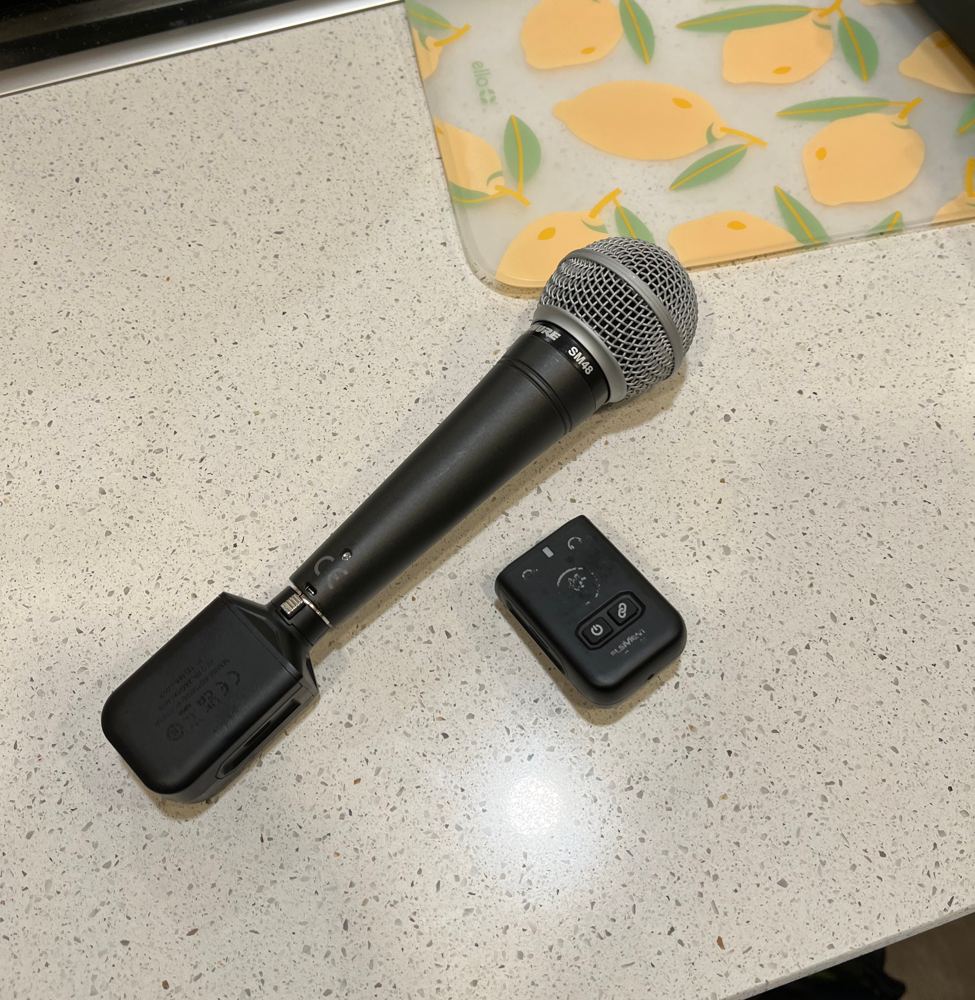
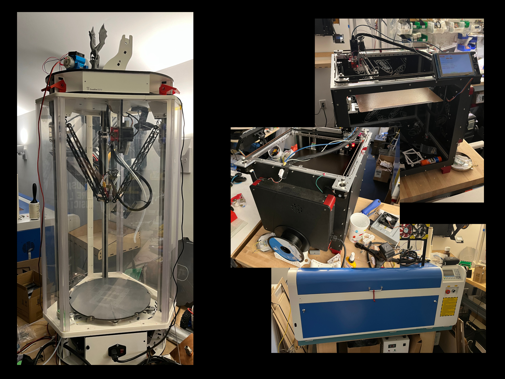
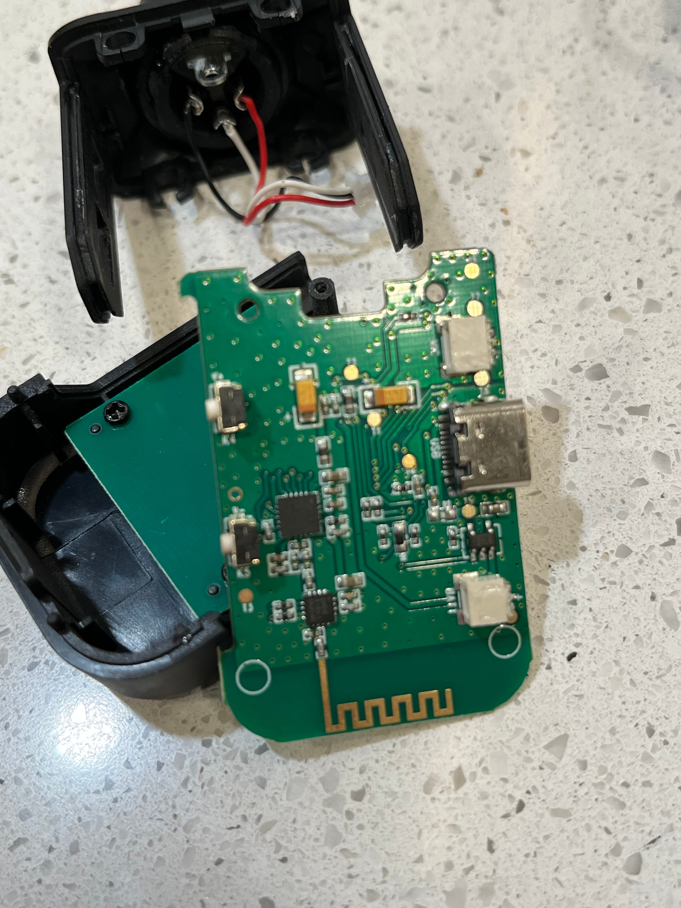

< ece individual discovery project >
The ECE Individual Discovery Project is an ECE 1100 assignment which encourages you to delve into an
area of electrical or computer engineering that you’re passionate about or interested in.
I took this as an opportunity to do something I should have probably done already anyways: fix my broken
Mackie EleMent Wave XLR. It’s designed to wirelessly capture and transmit audio from a
microphone.

The problem was, although it was designed to transmit audio, it definitely wasn’t doing it
anymore. The best I could get out of it was a low buzz when I made a loud enough sound into the
microphone.
With this information, I figured there was just a faulty hardware connection somewhere inside that I
could just solder back in place.
My plan was to take apart the receiver and transmitter as non-destructively as possible, diagnose and
repair the issue, then put the whole thing back together. If I broke either of the cases, I also planned
on 3d printing a new one.
To do this, I would need tools to take the devices apart, maybe a soldering iron, and hopefully no 3D
printers (if I was able to get into the devices without breaking them).
I was talking to a friend about how I planned to do this at the Hive, but he mentioned that his dad had
a makerspace in his home office that I would be welcome to use.
My friends’ dad turned out to be a great resource in this project. He’s a senior director at Microsoft
with all sorts of technical know-how, gizmos, and gadgets (including 4 different 3D printers).

He was incredibly helpful, but unfortunately we couldn’t diagnose the problem. After cracking both cases
open, there was no obviously faulty cable or connection.
I carefully inspected every part of the board, and even tried using an oscilloscope to trace the signal
and see where it was being distorted. This, though, proved challenging, and I eventually admitted that I
had no idea what I was doing and gave up.
While it may seem like I was defeated by this faulty gadget, I actually found that this experience was
incredibly helpful. For one, I made a connection with the director of a security division at Microsoft who can help me with both
hardware and software questions and who graciously allows me access to his makerspace. If this project
had not come up in conversation with my friend, I may have never made this connection.

Another important outcome of this project is that my eyes have been opened to just how much there is to
learn about computer engineering.
Before this, my only exposure to computer hardware was in building a couple of PCs and taking apart even
more during my childhood. While this taught me a lot of the jargon associated with computer engineering,
I never realized how much I lacked a fundamental understanding of what a computer actually is. I’ve
realized that I know close to nothing about circuits and electronics, which is a gap in my knowledge
that I’m now seeking to close by reading textbooks about computer architecture.
While this project was narrow in scope and disappointing in results, I do appreciate what it taught me,
and I hope to pursue greater things in computer hardware sometime soon.